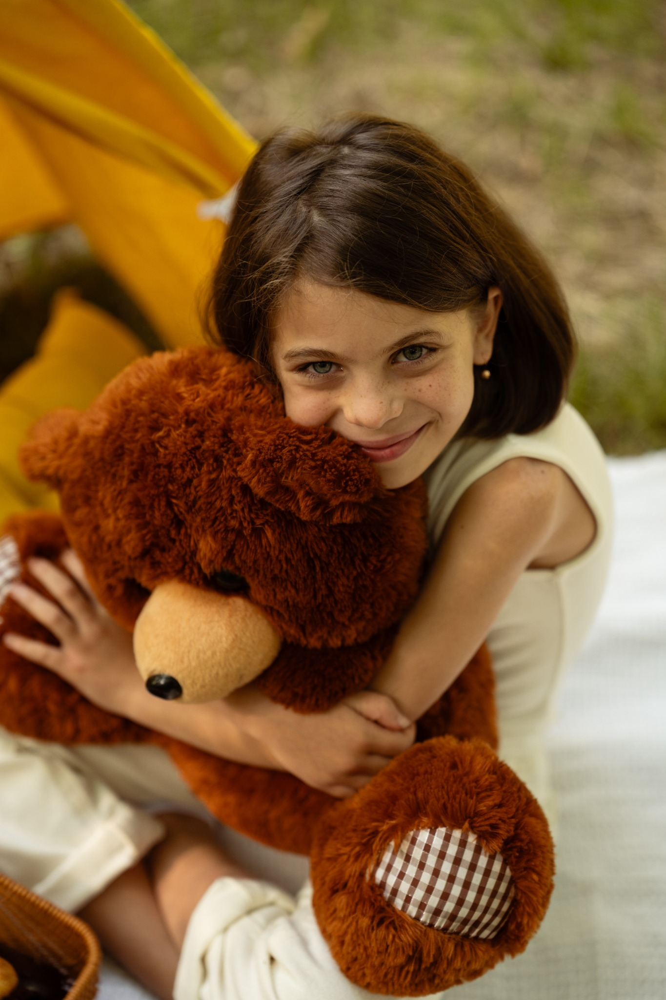

კომფორტი და ბუნებრიობა
არ გთხოვთ ხელოვნურ პოზებს. გაძლევთ მარტივ მიმართულებას, რომ მოძრაობა და ემოცია ბუნებრივად დარჩეს.

Moments by TM-ის ფოტოგრაფი
„ჩემთვის ფოტოგრაფია ბუნებრივი ემოციების შენახვაა. მინდა, ყოველ კადრში შენი ხასიათი, სითბო და ნამდვილი ღიმილი ჩანდეს.“
ჩემი მუშაობის სტილი აერთიანებს ბუნებრივ ემოციას, რბილ მიმართულებას და თბილ ვიზუალურ დამუშავებას. სესიის დაწყებამდე ერთად ვარჩევთ ლოკაციასა და დეტალებს, რათა საბოლოო ფოტოები არა მხოლოდ ლამაზი, არამედ თქვენთვის მოგონებად იქცეს.
კარგი შედეგი კამერის წინ კი არა, ჯერ კიდევ გადაღებამდე იწყება — იდეის, ნდობის და გარემოს სწორად შეთავსებით.
არ გთხოვთ ხელოვნურ პოზებს. გაძლევთ მარტივ მიმართულებას, რომ მოძრაობა და ემოცია ბუნებრივად დარჩეს.
ლოკაცია, ტანსაცმელი, ფერები და დეტალები წინასწარ შეგვიძლია შევათანხმოთ მოკლე მუდბორდით.
დიდ კადრებთან ერთად ვიღებ პატარა ჟესტებსაც — ხელებს, მზერას, ბავშვის დეტალებს და გარემოს.
ჩემთვის ფოტოს ღირებულება მაშინ იზრდება, როცა მასთან ემოციური კავშირი გაქვთ. ამიტომ ვეძებ არა მხოლოდ „სწორ“ კომპოზიციას, არამედ იმ შეხედვას, შეხებას და მოძრაობას, რომელიც თქვენს ისტორიას ეკუთვნის.
მომწერეთ თქვენი იდეა

გადაღებამდე ყველა მნიშვნელოვან დეტალს ერთად გავივლით — იდეიდან საბოლოო მიმართულებამდე.